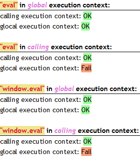
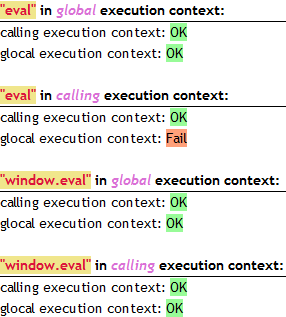

eval 方法，可以执行一段脚本，该脚本的上下文是当前代码的上下文执行的，如果没有指定上下文，该脚本将在全局上下文中执行。
该方法属于 native code 范畴 ，由全局对象 Global 提供支持。
关于 eval 的详细描述可以参见：ECMA 262 第五版 。
eval 方法在各浏览器都按照规范定义，根据当前代码上下文执行 eval 方法中的脚本，如果没有指定上下文，该脚本将在全局上下文中执行。
window.eval 方法，在 IE6 IE7 IE8 中依然在脚本所在上下文中执行，而 Firefox Chrome Safari Opera 中则将该脚本会在全局上下文中执行。
window.eval 方法执行一段代码时，若在指定上下文中定义了变量， IE6 IE7 IE8 在全局上下文中无法访问该变量，导致代码报错。
| 所有浏览器 |
|---|
分析以下代码：
<script> var cec = 'calling execution context: ', gec = 'glocal execution context: ', ok =
'<span class="ok">OK</span><br />', fail = '<span
class="fail">Fail</span><br />'; </script>
<h1><strong>"eval"</strong> in <em>global</em> execution
context:</h1> <script> eval('var a = 1;'); void function () { try { if (a == 1) {
document.write(cec + ok); } } catch(ex) { document.write(cec + fail); } }(); try { if (a == 1) {
document.write(gec + ok); } } catch(ex) { document.write(gec + fail); } </script> <br />
<h1><strong>"eval"</strong> in <em>calling</em>
execution context:</h1> <script> void function () { eval('var b = 1;'); try { if (b == 1) {
document.write(cec + ok); } } catch(ex) { document.write(cec + fail); } }(); try { if (b == 1) {
document.write(gec + ok); } } catch(ex) { document.write(gec + fail); } </script> <br />
<h1><strong>"window.eval"</strong> in <em>global</em>
execution context:</h1> <script> window.eval('var c = 1;'); void function () { try { if (c
== 1) { document.write(cec + ok); } } catch(ex) { document.write(cec + fail); } }(); try { if (c == 1) {
document.write(gec + ok); } } catch(ex) { document.write(gec + fail); } </script> <br />
<h1><strong>"window.eval"</strong> in <em>calling</em>
execution context:</h1> <script> void function () { window.eval('var d = 1;'); try { if (d
== 1) { document.write(cec + ok); } } catch(ex) { document.write(cec + fail); } }(); try { if (d == 1) {
document.write(gec + ok); } } catch(ex) { document.write(gec + fail); } </script>
上述代码分别检测了当使用 eval 及 window.eval 方法分别在全局作用域及局部作用域下执行声明并初始化变量的脚本代码，然后又分别在这两种作用域下尝试使用声明的变量，检查是否变量是否可用以及是否为初始化的值。
各浏览器执行结果如下：
| IE6 IE7 IE8 | Firefox Chrome Safari Opera |
|---|---|
|  |  |
可见，对于直接调用的 eval 方法在各浏览器都按照规范定义，根据当前代码上下文执行 eval 方法中的脚本，如果没有指定上下文，该脚本将在全局上下文中执行。
当使用 window.eval 方法时，
由于 window 对象属于宿主环境 ( host environment )，由 window 对象提供的 eval 方法不是规范中提到的与宿主环境无关的 Global Natvie Code。
此问题中， IE6 IE7 IE8 中处理情况可以认为是将 Gloabl 全局对象与 Host 宿主对象统一处理了，window.eval 即是 Global.eval，他会根据当前代码上下文确定执行内容的作用域位置。
而其他浏览器则与规范描述相吻合，他们都认为 window 中的 eval 是 Host 对象提供的，其作用域应与 Host 环境一致，而不用考虑代码在全局上下文中的位置。另一个直接调用的 eval 方法才是全局对象的，应该根据规范描述依赖执行上下文决定其中代码的作用域。
IE 中的 window.eval 方法不会产生全局上下文，对内部需要指定全局作用域环境的属性(变量)，请在前面逐个加入window 关键字，以便确定该属性(变量)执行时处于指定的 window 全局作用域环境。
| 操作系统版本: | Windows 7 Ultimate build 7600 |
|---|---|
| 浏览器版本: |
IE6
IE7 IE8 Firefox 3.6.10 Chrome 7.0.552.0 dev Safari 5.0.2 Opera 10.63 |
| 测试页面: | eval.html |
| 本文更新时间: | 2010-10-26 |
eval window.eval context 作用域